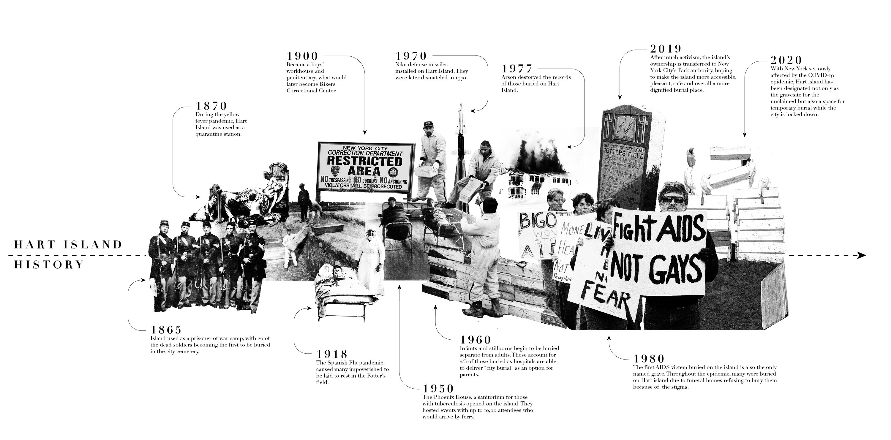
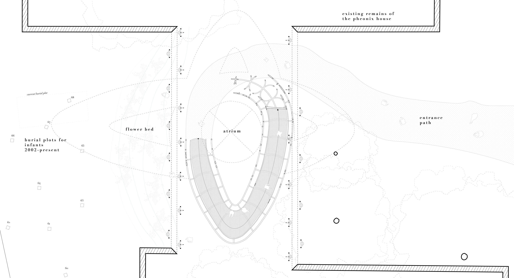
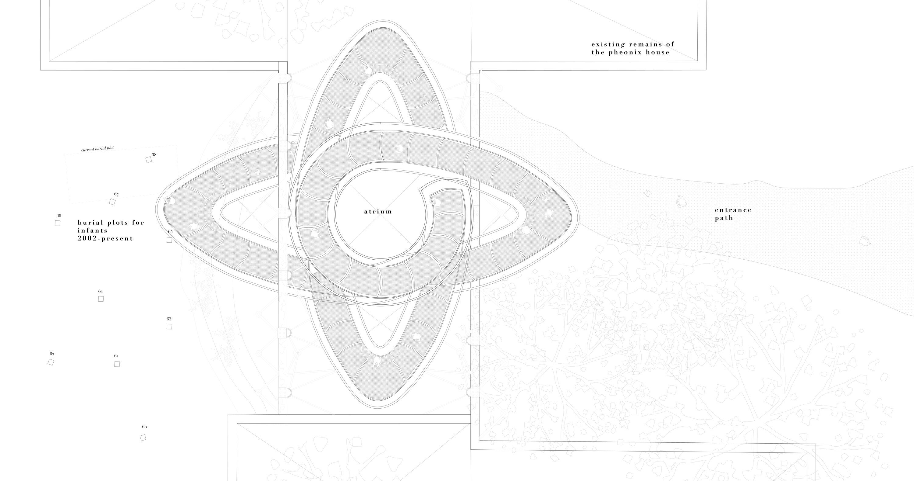
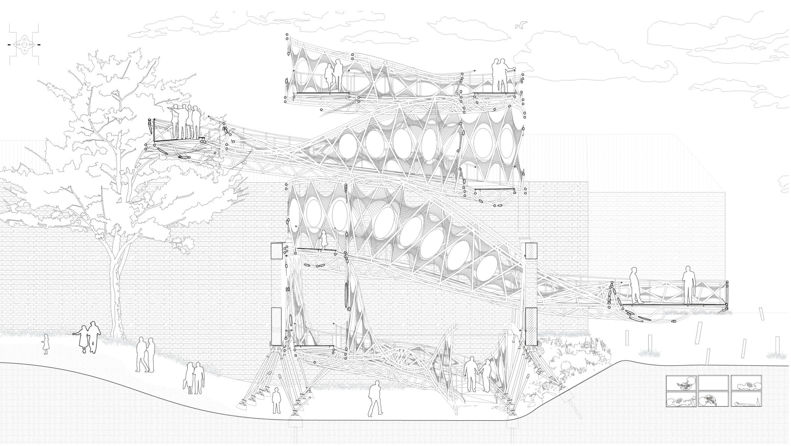
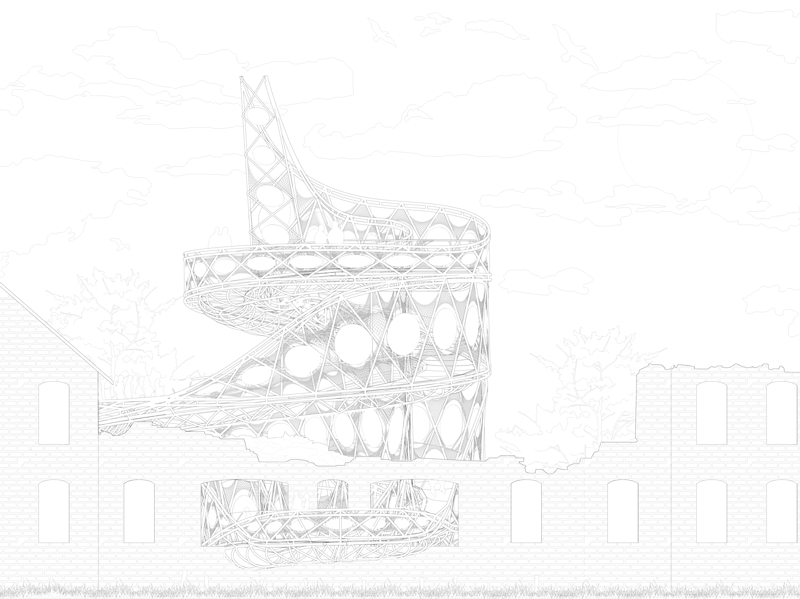
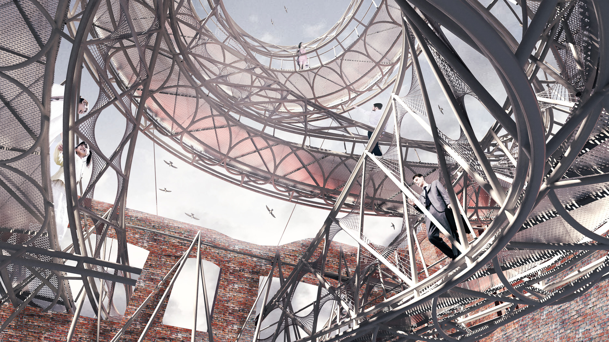
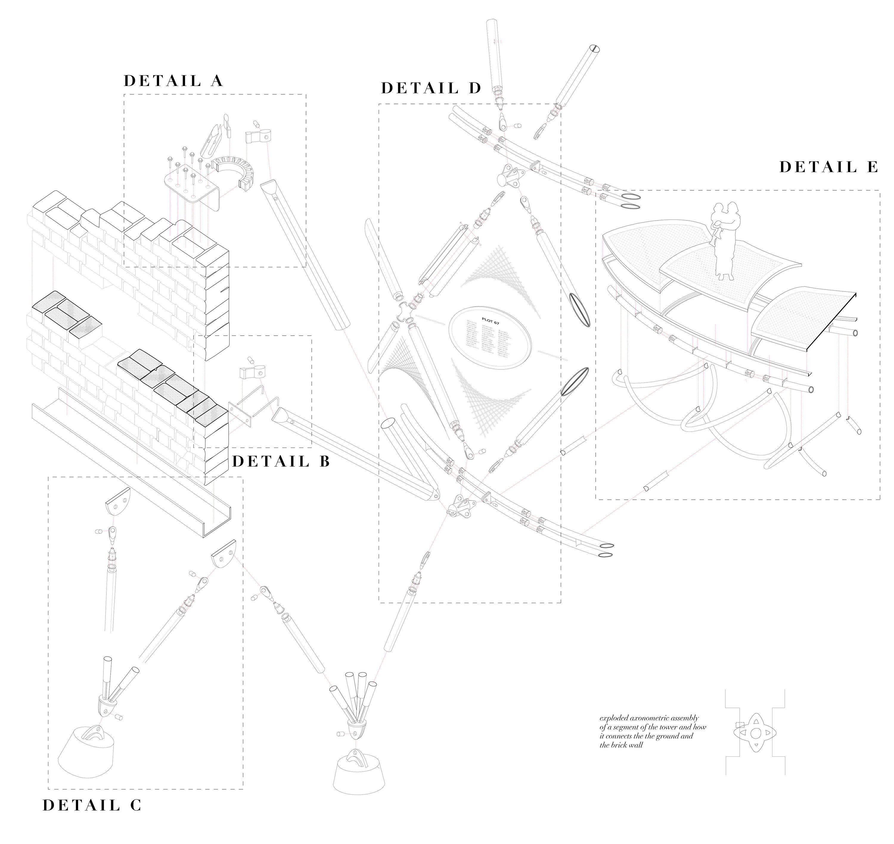

2020
HART ISLAND OSSURARY
The Forgotten Million, Now Remembered
Being a large city, New York not only has a large impoverished population, but also frequently experiences waves of disease. In order to deal with the death toll, the city began to bury bodies on Hart Island, a small isle on Long Island Sound. Hart Island Ossuary offers a proposal for an open-air visitors center, memorial and observation tower allowing guests to get panoramic views of the massive grave site while also taking the millions of dead out of anonymity.
CONTEXT
ACSA / AISC Steel
Design Competition
LOCATION
Hart Island, New York
SOFTWARE
Rhinoceros3D, Grasshopper (+Pufferfish), V-Ray, Photoshop, Illustrator
RECOGNITION

fig. 1. View of intervention from burial site, fig. 2. Site and location plans

fig. 3. History of the island
Due to the unmarked graves and the few accessible roads on the island, grave visitors may not be able to reach their loved one’s resting place. Taking advantage of the ruins of the former Phoenix House, the ramping structure weaves below, through and above the crumbling brick façade, commemorating not only the dead but also the history of the island.

fig. 4. Components isometrics

fig. 5. Perspective from approach fig. 6. Perspective from interior platforms


fig. 7. Ground floor plan fig. 8. Roof plan

fig. 12. East elevation fig. 10. Perspective from interior platforms

fig. 11. Perspective section

fig. 12. East elevation

fig. 13. Perspective in atrium

fig. 14. Detail exploded axonometric